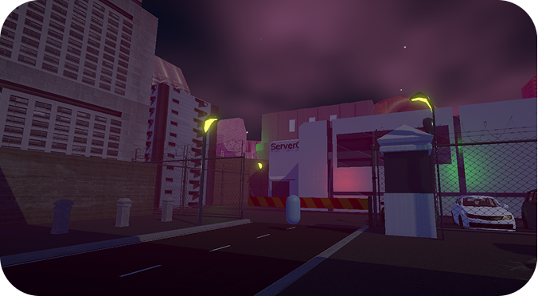

Interactive worlding piece developed in Unity.
Interactive experience critiquing the internet, capitalism and digital oligarchy using digital worldbuilding. The game itself acts as a mechanism of the world's oligarchy, and is an embodyment of the internet consumption model.
Will be available to download soon!